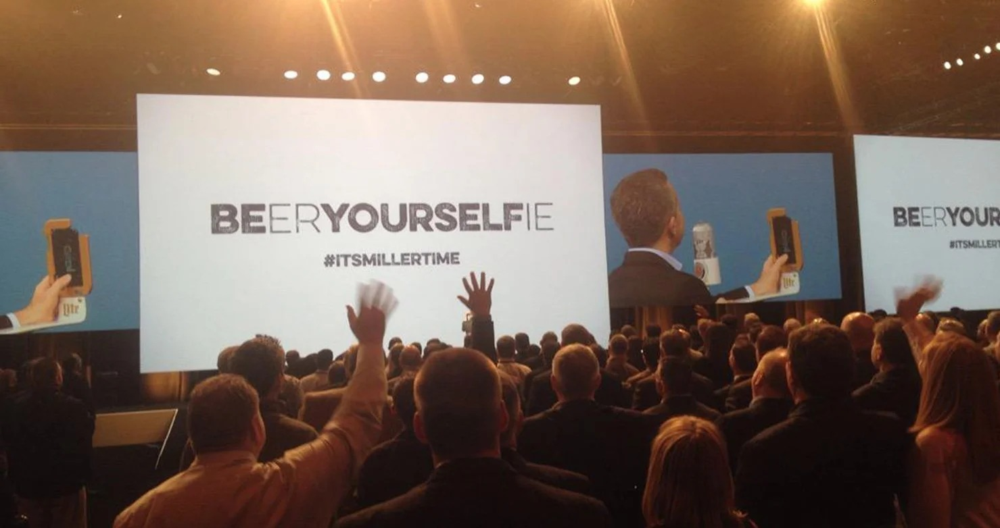

#BEERYOURSELFIE
Miller Lite offers a standing invitation to keep things real. And as a sponsor at SXSW, we had a bigger opportunity than many brands to do just that.
People aren’t going to South by Southwest to hang out with a brand, but they’re always happy to hang out with a Miller Lite in hand. So we created a tool to bring our brand positioning to life, and debuted the BeerYourSelfie at SXSW Interactive.
We connected, prototyped, printed, and first teased the BeerYourSelfie through Miller’s social channels on New Years Day. And got it into the hands of our influencers in time for the event.
- CW: Drew Shields
